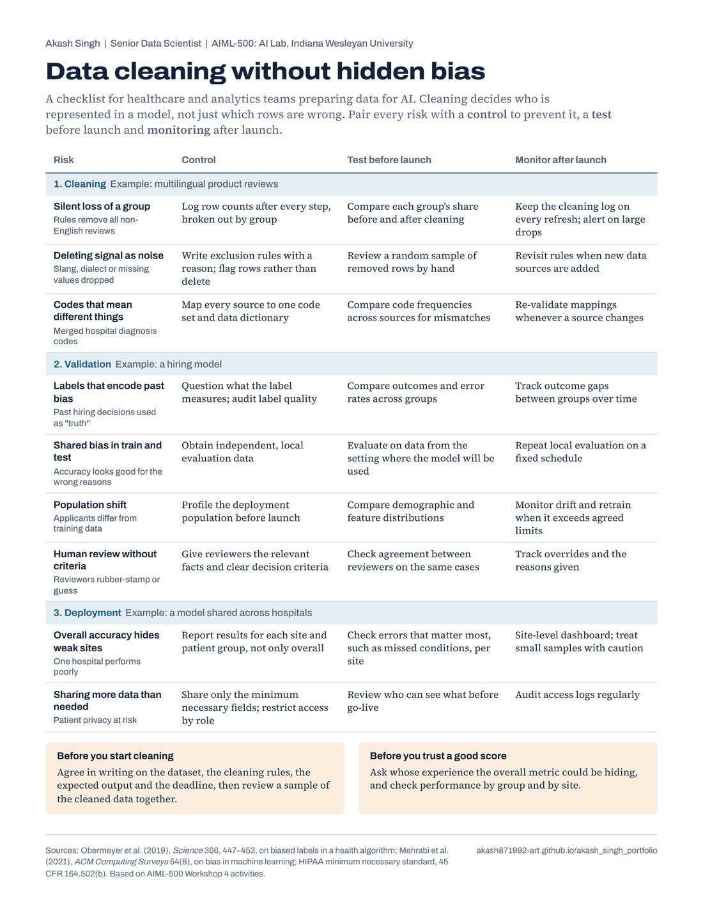

- Title
- Data cleaning without hidden bias
- Artifact type
- One-page risk-to-control checklist with project write-up
- Coursework
- AIML-500 Workshop 4: data preparation and bias activities
- Audience
- Healthcare leaders, data scientists and analytics teams
- Skill shown
- Responsible data preparation and bias risk control
- Deliverable
- Checklist, PDF, 1 page
Introduction
Data cleaning is usually described as removing wrong data. This course activity showed me it is more than that: every cleaning rule decides who is represented in a model. A rule that drops "messy" text can quietly remove an entire language group, and a model trained on biased labels can still score well if the same bias sits in its test data.
The activity walked through three scenarios: multilingual product reviews, a hiring model and a model shared across hospitals. For my portfolio, I turned the lessons into a practical checklist that a team can use before, during and after cleaning data for AI.
Description
The deliverable is a printable, one-page checklist organized in three stages: cleaning, validation and deployment. Each of its nine risks is paired with a control that prevents it, a test to run before launch and a way to monitor it after launch.

The three scenarios and what each taught
| Scenario | Data risk | What I would do |
|---|---|---|
| Multilingual product reviews | Cleaning rules could remove reviews from an entire language group without anyone noticing. | Count rows at every cleaning step, broken out by group, and question any rule that removes a whole group. |
| Hiring model | Past hiring decisions can carry bias into the labels. If the test data shares that bias, measured accuracy still looks good. | Check how the applicant population differs from the training data, gather local evidence before deployment and give human reviewers relevant information and clear criteria. |
| Model shared across hospitals | Merged data can use codes that mean different things, sharing too much puts privacy at risk, and one overall score can hide a hospital where the model performs poorly. | Share only the data needed, limit access, standardize codes and assess performance at each hospital separately. |
AI and data concepts applied
- Data quality and preparation. Cleaning rules, missing data, code standardization and documented exclusions.
- Representation and label bias. How cleaning and historical labels shape who a model learns from.
- Model validation. Why a biased model can pass testing, and why local and subgroup evaluation matters.
- Distribution shift and monitoring. Comparing training and deployment populations and watching for drift.
- Privacy and human oversight. Minimum necessary data sharing, access control and structured human review.
Objective
The course activity asked how data preparation choices can introduce or hide bias in AI systems. My objectives in turning it into a portfolio artifact were to:
- Show that data cleaning is a fairness decision, not only a technical one.
- Turn three classroom scenarios into a tool that works for any AI project.
- Make every safeguard concrete by stating exactly how it is tested and monitored.
Process
- Work through the scenariosI analyzed the product review, hiring and hospital cases in the course activity and noted where each data decision could exclude people or hide errors.
- Revise my assumptionsI had assumed a biased model would fail on test data. I changed that view after seeing that shared bias in training and test data can make performance look good.
- Draw on related courseworkI added healthcare strategies from my Workshop 4 work on bias, including label review, code consistency across hospitals and benchmarking each site.
- Build the risk-to-control mapFollowing the next step I identified in the activity, I paired each risk with a control, a test and continuous monitoring.
- Design for the audienceI grouped the nine risks into three stages, kept each scenario as a worked example and fit everything on one printable page.
- Ground it in sourcesI checked the guidance against published research on label bias and on bias in machine learning, and against the HIPAA minimum necessary standard.
Challenges and solutions
| Challenge | How I solved it |
|---|---|
| Cleaning metrics can look fine while a group disappears | I made row counts by group the first control, so losses show up at the step where they happen. |
| A biased model can still pass testing | I added independent local evaluation and subgroup error checks, so a good score is never the only evidence. |
| My first ideas for safeguards were general | I required every risk to have a specific test and a monitoring step, which turned principles into actions. |
| Nine risks and four columns on one page | I grouped the risks by stage, used each scenario as a short example and kept every cell to one action. |
Tools and technologies used
- Data profiling
- Row counts and group proportions at each cleaning step.
- Data dictionaries and code mapping
- One standard code set across merged sources.
- Subgroup and site-level evaluation
- Error rates by patient group and hospital, not only overall accuracy.
- Drift monitoring
- Comparing deployment and training distributions over time.
- Access control and data minimization
- Role-based access and minimum necessary sharing.
- HTML and CSS
- The checklist layout, exported to a print-ready PDF.
Value proposition
This project shows that I can prepare data for AI responsibly, catching quality and bias problems before they reach a model or a patient.
Most AI failures start in the data. A team that uses this checklist can show what it removed and why, prove the model works for every group and site, and keep checking after launch.
Unique value
- Practical data experience. In pharmacy pricing I merge data from multiple sources every day, where a code that means different things in two systems can quietly distort results. That experience shaped the cleaning and validation controls.
- A different skill from my other projects. Projects 1 to 4 show building, storytelling, technical judgment and business analysis. This project shows responsible data preparation, the foundation every model depends on.
- Actions, not principles. Every risk comes with a concrete test and a monitoring step, so a team knows exactly what to do.
Relevance
For healthcare leaders, it gives a quick way to ask the right questions before approving an AI tool, especially whether it works at every hospital and for every patient group.
For data scientists and analysts, it is a working checklist for cleaning and validating data, with a written trail of what was removed and why.
For anyone deploying AI, it is a reminder that a good overall score is the start of the evidence, not the end.
Connection to course objectives
- Applying AI concepts in real-world scenarios. The checklist addresses reviews, hiring and hospital data, settings where data decisions affect real people.
- Critically evaluating and selecting artifacts. I chose this work because it adds data preparation and bias control, a competency my other projects do not show.
- Customizing for an audience. I expanded the classroom activity into a printable tool for healthcare and analytics teams.
- Leading responsible change. It supports the compassion, fairness and accountability I aim to bring as a healthcare leader.
Use it on your next project. Print the checklist, assign an owner to each row and review it at three points: before cleaning, before launch and one month after launch.
References
- Mehrabi, N., Morstatter, F., Saxena, N., Lerman, K., & Galstyan, A. (2021). A survey on bias and fairness in machine learning. ACM Computing Surveys, 54(6), Article 115. https://doi.org/10.1145/3457607
- Obermeyer, Z., Powers, B., Vogeli, C., & Mullainathan, S. (2019). Dissecting racial bias in an algorithm used to manage the health of populations. Science, 366(6464), 447–453. https://doi.org/10.1126/science.aax2342
- U.S. Department of Health and Human Services. (n.d.). Minimum necessary requirement (45 CFR 164.502(b)). https://www.hhs.gov/hipaa/for-professionals/privacy/guidance/minimum-necessary-requirement/index.html